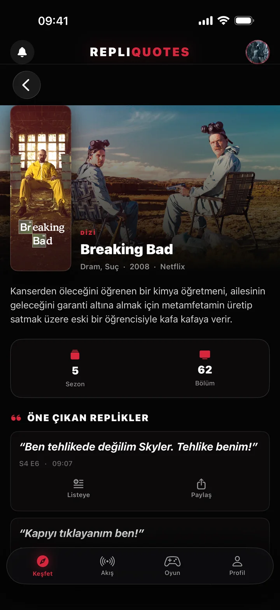
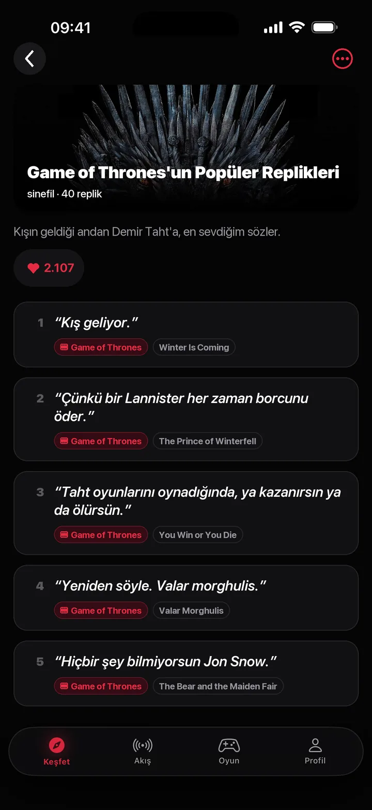
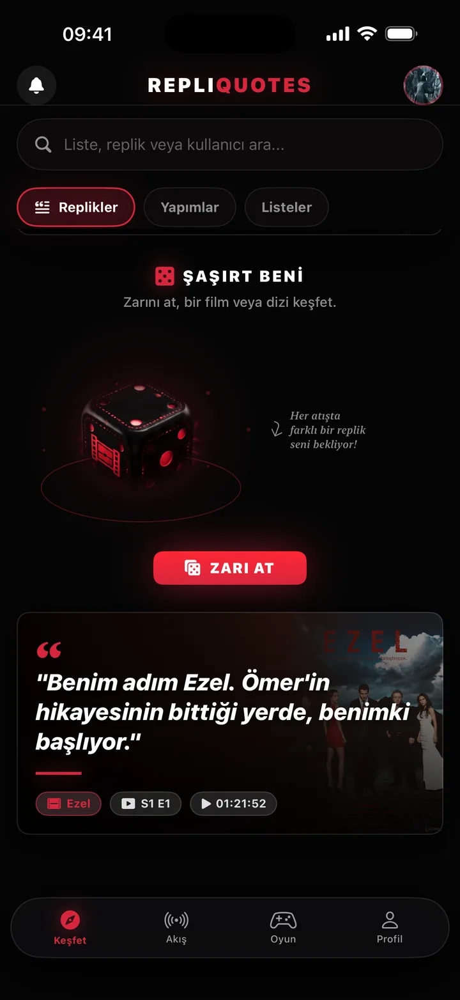
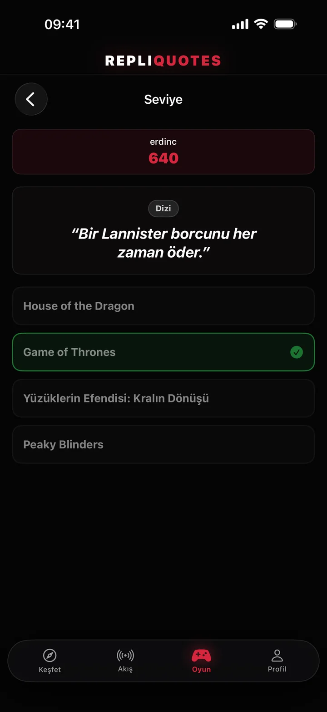
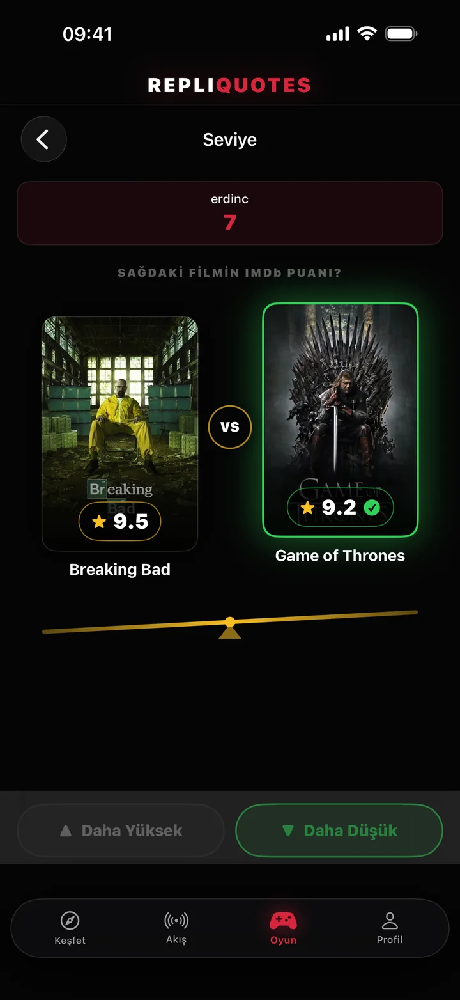
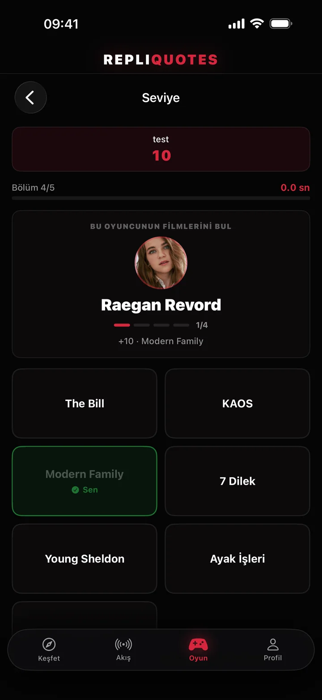
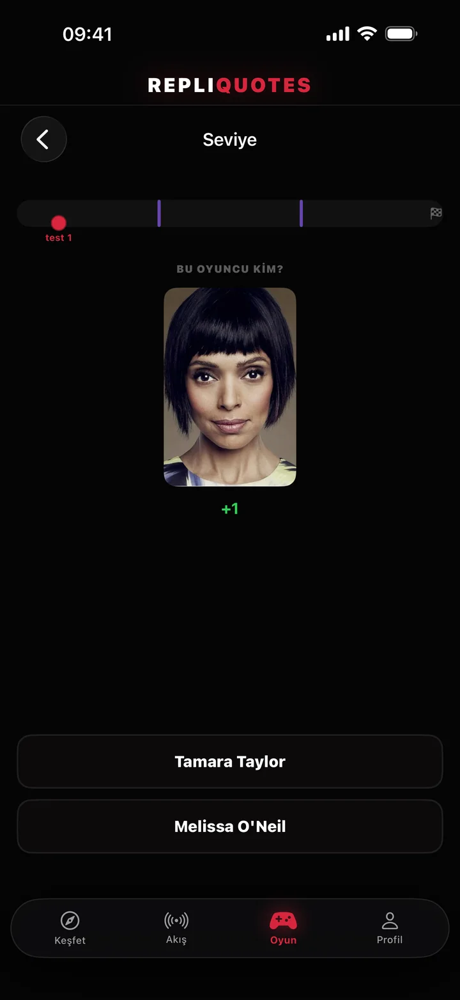
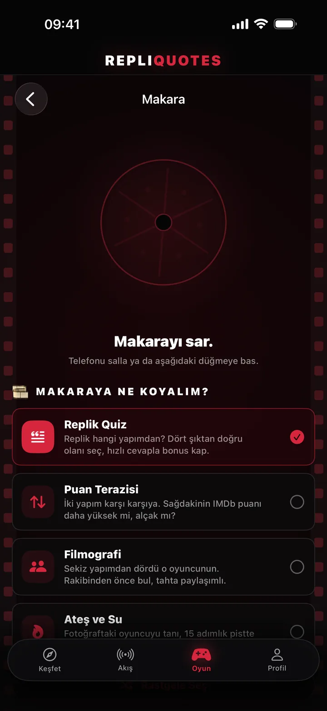
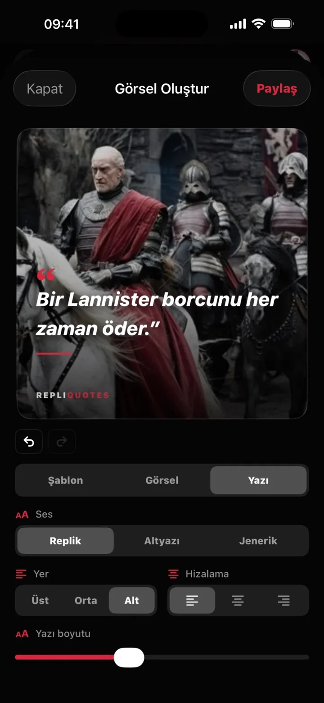
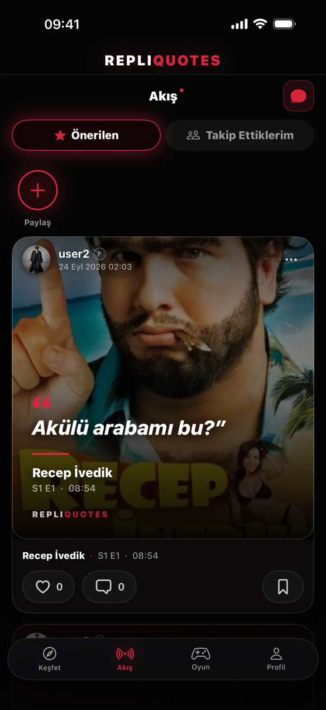

Aklındaki repliği anında bul
Hatırladığın birkaç kelimeyi yaz; RepliQuotes yüz binlerce replik arasından doğrusunu bulur, hangi yapımda, hangi bölümde ve kaçıncı dakikada geçtiğini gösterir. Sonra listene ekle, oyna, paylaş.
Aklındaki cümleyi yaz, replik gelsin
Cümlenin tamamını bilmene gerek yok. "tehlike benim" yazdığında Breaking Bad'in unutulmaz sahnesi karşına gelir.
- Birkaç kelime yeter. Hatırladığın parçayla arama yap, doğru replik ilk sıralarda.
- Saniyesine kadar bilgi. Her sonuçta yapım, sezon, bölüm ve zaman kodu yazar.
- Süz ve sırala. Replikler, yapımlar ya da kullanıcılar arasında ara; dizi adına göre sırala.
- Tek dokunuşla sakla. Beğendiğin repliği listene ekle ya da arkadaşlarınla paylaş.
Her dizinin ve filmin kendi sayfası
Kütüphanedeki tüm dizi ve filmleri tek ekranda gez; "Diziler" ya da "Filmler" diye süz, aradığını adından bul.
- Yapım bilgileri. Afiş, tür, çıkış yılı ve yayınlandığı platform.
- Konu ve bölümler. Konu özeti, sezon ve bölüm sayıları.
- Öne çıkan replikler. O yapımın en iyi anları, sezon, bölüm ve dakikasıyla.
- Hemen kullan. Her replikte "Listeye ekle" ve "Paylaş" düğmeleri.

Kendi replik koleksiyonunu oluştur
"Breaking Bad'in En İyileri", "Motivasyon Sözleri", "Arkadaşlarla Kullanılacak Replikler"… Sevdiğin replikleri dağınık bırakma, listelerde topla.
- Saniyeler içinde kur. Artıya dokun, listene bir ad ve açıklama ver.
- Her yerden ekle. Aramada, yapım sayfasında ya da akışta gördüğün repliği "Listeye" düğmesiyle ekle.
- Kapağını seç. Sevdiğin yapımın görselini listenin kapağı yap.
- Açık ya da gizli. Listeni herkesle paylaş ya da yalnızca kendine sakla; en sevdiğini profiline sabitle.
- Topluluğu keşfet. Diğer kullanıcıların listelerini gez, beğen, yeni replikler bul.

Her gün bir efsane replik
Uygulamayı her açtığında "Günün Repliği" seni yeni bir sahneyle karşılar. Ne izleyeceğine karar veremiyorsan zarı at.
- Günün Repliği. Her gün farklı bir yapımdan, sahnesiyle birlikte.
- Şaşırt Beni. Zarı at; her atışta bambaşka bir film ya da diziden bir replik çıkar.
- Hesap gerekmez. Arama, keşif ve zar giriş yapmadan da çalışır.

4 oyun, tek uygulama
Film ve dizi bilgini sına. Her modu tek başına oynayabilir ya da Makara'da gerçek rakiplerle kapışabilirsin.
- Replik Quiz. Replik hangi yapımdan? Dört şıktan doğrusunu seç, hızlı cevapla bonus kap.
- Puan Terazisi. İki yapım karşı karşıya: sağdakinin IMDb puanı daha yüksek mi, alçak mı?
- Filmografi. Sekiz yapımdan dördü o oyuncunun. Rakibinden önce bul.
- Ateş ve Su. Fotoğraftaki oyuncuyu tanı, pistte öne geç.




Makarayı sar, rakibini bul
Oyununu seç, makarayı sar ya da telefonu salla. Makara seni saniyeler içinde çevrimiçi bir rakiple eşleştirir.
- Anında eşleşme. Aynı anda oynayan biriyle karşı karşıya gel.
- Ligde yüksel. Kazandığın maçlarla genel ligde ve oyun liglerinde sıralamaya gir.
- Arkadaş ligi. Arkadaşlarınla kendi ligini kur, ay sonunda zirvede kim var gör.

Repliğini afişe dönüştür
Sevdiğin repliği sinema afişi tadında bir görsele çevir, hikâyende ya da sohbette paylaş.
- Sahneyi seç. Yapımın görsellerinden birini arka plan yap.
- Yazıyı yerleştir. Yazının yerini, hizasını ve boyutunu ayarla; hazır şablonlardan birini kullan.
- Tek dokunuşla paylaş. Hazırladığın afişi kaydet ya da doğrudan gönder.

Replikleri paylaş
Film ve dizi tutkunlarıyla aynı akışta buluş. Repliklerini ve düşüncelerini paylaş, sevdiğin kullanıcıları takip et.
- Paylaş ve tartış. Gönderileri beğen, yorum yap, kaydet.
- Mesajlaş. Arkadaşlarınla birebir yazış.
- Hiçbir şeyi kaçırma. Biri seni takip ettiğinde ya da paylaşımını beğendiğinde bildirim gelir.
- Güvenli topluluk. Bildir, sessize al ve engelle; küfürlü içerik varsayılan olarak bulanık gelir.


Repliğini bul, listene ekle, oyna.
RepliQuotes çok yakında App Store'da, ücretsiz. Soruların ya da önerilerin için bize her zaman yazabilirsin.